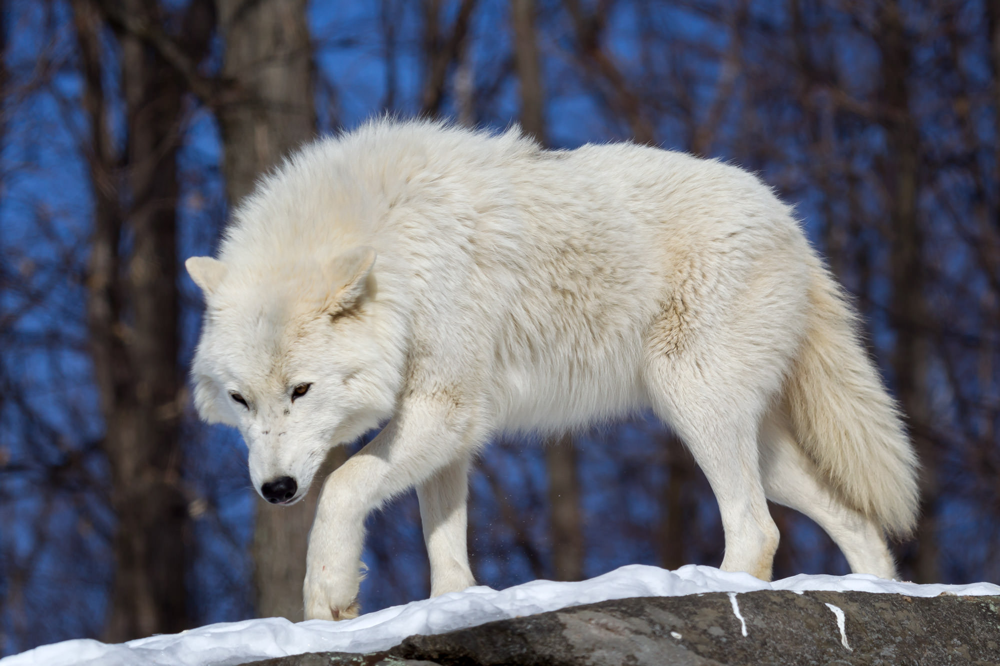

|
 |
The Arctic wolf (Canis lupus arctos) is a subspecies of the gray wolf that inhabits the remote Arctic regions of North America and Greenland. These wolves are uniquely adapted to extreme cold, with thick white fur that provides insulation and camouflage against the snowy landscape. Typically living and hunting in packs, Arctic wolves primarily feed on muskoxen, Arctic hares, and caribou, although they may also scavenge when food is scarce. Unlike other wolf subspecies, Arctic wolves face relatively few natural predators and human threats due to their isolated habitats, allowing them to maintain stable populations in the harsh Arctic environment. Their social structure is highly organized, with cooperative hunting and strong family bonds ensuring survival in one of the planet’s most unforgiving ecosystems. |
White